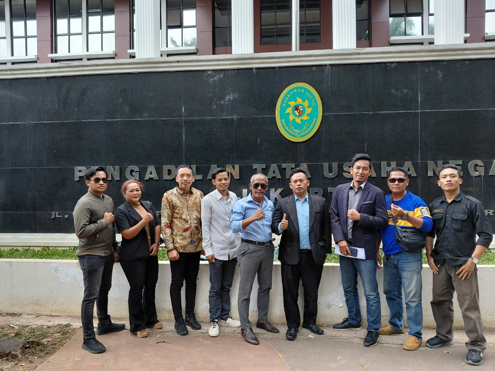
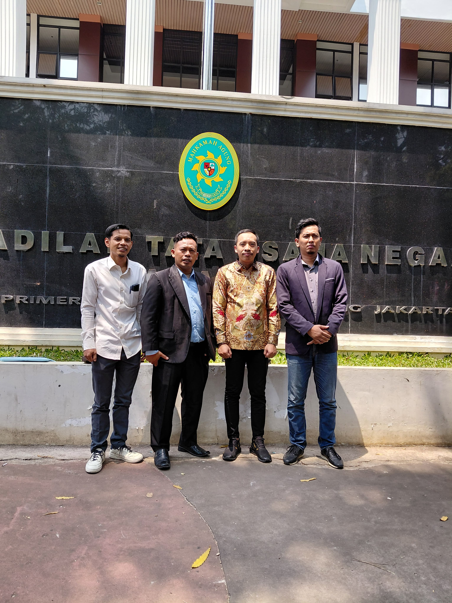
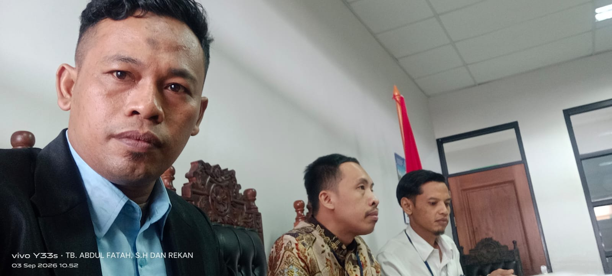
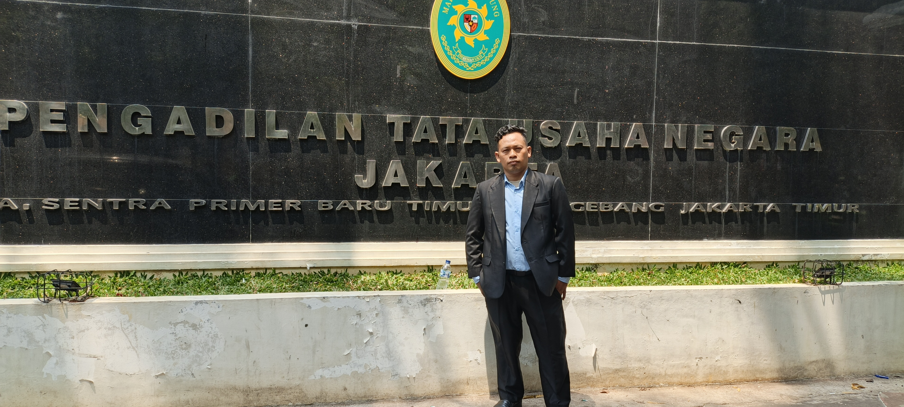

Berikut sebagian dokumentasi kegiatan TB Abdul Fatah, S.H. dan Rekan dalam mendampingi klien — mulai dari persidangan, sesi mediasi, konsultasi, hingga kegiatan organisasi. Setiap foto ditandai seperti lampiran berkas perkara, sesuai kebiasaan pengarsipan dokumen hukum.






Klik foto untuk melihat versi lebih besar. Kotak putus-putus
menandakan foto belum ditambahkan — letakkan file pada folder
img/portofolio/ dengan nama file yang sesuai agar
otomatis tampil.
Ingin didampingi untuk kasus Anda? Konsultasikan secara langsung dengan kami.
Konsultasi via WhatsApp